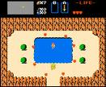
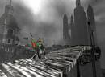

Anexo:Tópicos de los RPG
 De: La Frikipedia, la enciclopedia extremadamente seria.
De: La Frikipedia, la enciclopedia extremadamente seria.
Todo RPG (Role Playing Game, no confundir con Rocket Propelled Grenade) requiere de ciertas características para ser considerado como tal. Esto genera controversias entre los roleros, pero al fin y al cabo define lo que vienen siendo los juegos de rol para consolas.
Reglas
 Típico lugar de relajación en un RPG
- Regla del dormilón: El protagonista masculino empezará el primer día del juego quedándose sopa. Lo despertará su madre, recordándole que se ha quedado dormido y que llega tarde a la cita con su novia.
- ¡¡Noo!! ¡¡Mi querida aldea campesina!!: La aldea o pueblo del protagonista (quien dice aldea dice planeta o ciudad) será eventualmente aniquilada de una forma espectacular antes del final del juego, normalmente después del opening o la primera misión.
- Pensando con la polla (regla Hiro): No importa de qué esté acusada o cuan oscuros sean sus orígenes, el héroe protagonista siempre estará dispuesto a luchar a muerte por la chica que acaba de conocer hace escasos segundos.
- Corolario del circonio cúbico: La anteriormente mencionada chavala será la portadora de un collar que a mediados del juego será descubierto como la clave para salvar el mundo o destruirlo.
- Regla de Logan: Los personajes de RPG son jóvenes. MUY jóvenes. La edad media parece ser 15 años, a no ser que el personaje sea un condecorado soldado endurecido por la batalla, en cuyo caso puede tener hasta 18 años. Estos quinceañeros a menudo son habilidosos con varios tipos de armas y magia, tienen años de experiencia y NUNCA se preocupan de que sus padres les envíen a la cama a la hora de dormir. Por el contrario, los personajes de más de 22 años se referirán a ellos mismos como vejetes dispuestos a dar paso a nuevas generaciones.
- Regla del progenitor: Apenas existen personajes de RPG que vivan con sus dos padres. Como regla general, los personajes masculinos tendrán sólo una madre, y los femeninos sólo un padre. El progenitor restante puede haberse desvanecido sin dejar rastro misteriosamente hace años o nunca ser mencionado siquiera. Con frecuencia, el padre restante del personaje principal encontrara un horrible final justo despues de que empieze la historia, liberandolo así de sus inoportunas obligaciones filiales.
- ¿Alguien me ha llamado... Tim?: Los buenos siempre tienen sólo nombre, y los malos sólo apellido. Cualquier personaje malo que tenga sólo nombre se volverá bueno en algún punto del juego. Los apellidos de los protagonistas buenos pueden ser mencionados en el manual pero nunca ser referenciados a lo largo de la historia.
- Regla nominal: Cualquier personaje al que se le de un nombre en el juego es importante de alguna manera y viceversa. No obstante, si se refieren a él como un posesivo de otro personaje (La mamá de Chrono) entonces es superfluo.
- Sospechosos habituales: Siempre hay una mazmorra de fuego, una mazmorra de hielo, un laberinto en las alcantarillas, un bosque misterioso, un barco pirata fantasma, una mina, un laberinto de cristal brillante, un templo antiguo lleno de trampas y una mazmorra tecnológica.
- Regla de Luddite (o regla de George Lucas): La tecnología es inherentemente malvada y es exclisova de los malos. Ellos son los que tienen robots, fábricas, megalópolis ciberpunk con estaciones de combate flotantes... mientras los buenos viven en una pequeña aldea en paz y armonía con la naturaleza. (Aunque parece que tus armas o tus fortalezas con armamento pesado están extentas de esto).
- Empezando desde el muy principio (Regla de Yuna): Aunque sea una secuela de una RPG conel mismo protagonista, empezará con habilidades de principiante. Todo lo que aprendió se le habra olvidado, y sus armas ultra-potentes habrán desaparecido.
- Pobre pequeño y rico héroe (Regla de Meis): Si el héroe viene de una familia rica y poderosa, esta estará atravesando una mala racha y caera en quiebra al inicio del juego.
- Mas alto el pelo, mas cerca de dios.: Cuanto mas raro sea el peinado, mas importancia tendrá en la historia.
- Principio de Garrett: Seamos claros: eres un ladrón. . Entras en cualquier casa sin llamar, aunque la puerta este abierta. Simplemente llegas y empiezas a buscar objetos. Cualquier cosa que este suelta te pertenece. Habitualmente, entrarás en casas de extraños, cogeras sus objetos más valiosos, hablarás con ellos como si fuerais amigos de toda la vida mientras te llevas sus tesoros de familia. Desgraciadamente, esto nunca ocurrirá en una tienda...
- La queja de Cronos: Cuanto menos habla un personaje, mas palabras pronuncia, y por lo tanto se mete en mas líos.
- Estúpido niño! Mira que llevar una espada en vez de una pistola...: no importa en que época esté situado el juego. El personaje principal y su enemigo siempre usarán una espada. (Lo cual te permite identificar rápidamente a tu enemigo desde el principio). Estas espadas serán mas poderosas que cualquier pistola, e incluso capaces de realizar ataques a distancia.
- Mueve la cabeza y sonríe: no importa lo grande que sea tu espada. Ni que tengas armas suficientes para derrotar a todo el ejercito tú solito. Nadie cruzara la calle para evitarte ni se alarmarán a tu paso. Seguirán su vida normal aunque entres en su casa a la hora de la cena, cojas todas sus posesiones y les preguntes si han visto al hombre de la capa negra. Después de todo están acostumbrados. (Veáse la Regla de Meis).
- Corolario de Aeris: Si el protagonista masculino usa una espada, la protagonista femenina usará una varita o algo parecido.
- Regla de MacGyver: Excepto para el protagonista, las armas a escoger son muy variadas y no se verá limiado a espadas, pistolas o bates. Con las habilidades adecuadas, podrás ir matando a la gente con tus puños, cuerdas, paraguas, lapiceros, altavoces, diccionarios o pizarras -- tú lo coges, tu puedes matarlos. no importa lo surrealista que sea el objeto, en la siguiente tienda tendrá un modelo mejor a un precio razonable. ¿Quién más anda por el mundo asesinando getne con un paraguas?
- ¡¡Hey tío!! ¿Tú quién eres? (Regla de Melfic): Si el protagonista masculino tiene un hermano mayor, éste será hombre y acabará siendo la mano derecha del malo. Si tiene un hermano menor, éste será secuestrado por los villanos.
- El capitalismo es un mal consejero.: Vendas lo que vendas en una tienda, el vendedor se lo revenderá inmediatamente a otra persona, y nunca más volverás a ver ese objeto.
- Principio de Transcendencia Dimensional: La casas siempre son más grandes por dentro que por fuera, y eso sin contar los laberintos escondidos detrás del reloj del sótano.
- Regla del Control Local: Aunque el mounstruo que aterroriza a la primera ciudad del juego es mucho menos poderoso que que los monstruos no-jefes que sólo son moscas en las ciudades que aparecen mas tarde, a nadie se le ocurre contratar a unos mercenarios de éstas para que vayan a la primera ciudad a derrotar al jefe.
- Regla de Nostradamus: Todas las leyendas y predicciones aciertan al 100% pero no cualquier día, si no inmediatamente.
- IDKFA: La munición para las armas de fuego de cualquier personajes es ilimitada o muy muy muy ... muy muy muy fácil de obtener. Aunque el arma sea muy extraño o única en su especie.
- Regla de las armas indestructibles: no importa cuantas veces ataques con tu espada a enemigos con armadura o que dispares esa pistola incesantemente. Nunca se romperán, atascarán, o necesitarán mantenimiento a no ser que sea necesario para la historia que se rompa, atasque o necesites repararla.
- Parálisis selectiva: Tus personajes siempre tendrán los dos pies en el suelo y serán incapaces de pasar por encima de pequeños escalones, pasamanos, sillas, gatos, tierra de diferente color o cualquier otro objeto que al parecer esté en su camino. Pero esto no les impedirá saltar de un coche a otro más adelante.
- Cama, cama y más cama.: Una noche entera durmiendo es capaz de curar todas las heridas, enfermedades o discapacidades, incluso la muerte.
- No puedes matarme, me voy. (Regla de Seifer): Los chicos buenos nunca se atreven a arrestar o matar a los malos. A los malos de menor rango, les permiten irse libremente, para que puedan volver a amenazarles mas tarde. A veces a los cinco minutos. Conociendo esta argela sabrás que, si consigues matar a alguno, estarás cerca del final del juego.
- ¡¡Ahora mueres tu Mr. Bond!! (Regla de Beatrix): Afortunadamente, la regla anterior también se aplica a la inversa. En vez de matarte cuando pueden, los malos se contentarán con dejarte un punto de vida y dejarte tirado mientras se dan un paseo.
- ¡Zap!: La mayoría de los villanos pueden teletransportarse. Habitualmente, lo utilizan para teletransportarse a la Legandaria Sala obligatoria de la Reliquia para cogerla antes de que el héroe pueda atracesar la habitación. La pregunta de ¿por qué esperan a que el héroe resuelva tel puzzle de la tercera planta? nunca tendrá respuesta.
- Si sale cara gano yo, si sale cruz tú pierdes. (Regla de Graph): No importaq ue ganes la pelea conra el jefe, el malvado plan que estaba llevando acabo se completará de alguna manera.
- Regla del Universo Mecánico: No importa el esfuerzo que gasten en detenerlo. Ese meteorito chocará contra la tierra.
- Falso Final: Hay una secuencia que parecerá el final, pero obviomente no lo es, entre otras cosas porque aún están en el disco 1 de 4.
- Tú mueres y nosotros subimos de nivel: Surante ese flaso final, el villano real matará al que suponías que era el malo, sólo para demostrar lo malo que es. Nuncá lograrás matar al malo con tus propias manos.
- ¿Qué vamos a hacer esta noche Vinsfeld?: El objetivo de todo juego, el cual se revela durante el flso sinal, es salvar al mundo de un ser malvado que está intentando dominarlo o destruirlo. No puedes escapar de esta tarea. no importa que el objetivo en la vida del protagonista sea pagar la hipoteca, explporar lejanas tierras, o ligar con la chica de azul de la tienda de la esquina. Antes de poder realizarlo, deberá salvar al mundo. Pero no te preocupes, una vez que hayas salvado al mundo, lo demás ocurrirá rápidamente.
- Axioma de Zelda: Cuando alguien te comente algo sobre "los cinco talismanes" o "los nueves cristales legendarios" o algo similar, puedes estar seguro de que para salvar al mundo necesitarás todos y cada uno de ellos.
- Iniciativa De la Simplificación De la geografía George W. Bush: Todos los paises del mundo tienen una ciudad, excepto en el que empiezas, que tendrá tres.
- Regla-Guia de Fodor: Durante tu aventura, te encontrarás: Una ciudad desierta, una puerto, una ciudad minera, una ciudad casino, una ciudad mágica que habitualmente flota, un castillo medieval, una ciudad mecánica, un ciudad basada en las artes marciales, el refugio de los ladrones, una ciudad perdida y una utopía. Mientras tanto tambien te encontrarás con rocas que brillan de forma natural, una aldea poblada por seres no-humanos, otra aldea pacífica donde todas están al tanto sobre las hazañas del héroe, una aldea nevada, una lago/bosque/montaña mágica, una tienda en medio de la nada, una jungla tropical poblada por nativos amables, un laberinto extra largo, y un lugar (cualquier sitio) que fue destruido en l pasado por algún desastre.
- ¡Hey! ¡Yo a ti te conozco!: Siempre te encontraras con el menos tres de estas personas en tu grupo:
- La princesa que se rebela contra el poder de su padre y está enamorada del héroe.
- La maga-hembra especialista en curaciones. No solo está enamorada del héroe, si no que es la única superviviente de una antigua rara y extinta raza de seres extraños.
- La listísima guerrera que NO esta enamorada del héroe (el único personaje femenino no enamorado del héroe.) Se caracteriza por tener una cicatriz de lado a lado, tener un ojo de menos, un pecho de más o cualquier otra deformidad física.
- El espadachín misterioso que acumula penas en su corazón.
- El gigantón enfadado con el mundo, deprimido y de buen corazón.
- El mejor amigo del héroe que mola mas que el héroe. (Tanto que suele morir antes de acabar el juego para no robar el protagonismo).
- El mercenario sin escrupulos que aprende durante el juego a confiar en el resto de personas.
- El espía de los malos que se vuelve bueno y se una a tu grupo en cuanto le descubres.
- El extraño personaje-bonus que aparece después de una rara, compleja y complicada serie de quests. Tan extraño que todo el mundo intenta evitar escogerlo.
- La mascota inútil y nauseabunda.
- ¡Hey! ¡A it también te conozco!: No te quedará mas remedio que enfrentarte a tres de los siguientes enemigos.
- El tío macizo de pelo largo y malvado que puede ser o no el malo malvado.
- La mano derecha del malo malvado con sus dos versiones. Patoso y gracioso o pesado y repetitivo.
- La amante del malo malvado, que es la mas fuerte e intelegente de su ejército (y seguramente la única) pero que siempre acaba enamorándose del héroe.
- Tu amigo, que se murió y te olvidaste de él, pero que vuelve de la tumba (o del hospital) en el último momento en el bando del malo.
- El enemigo con sentido del honor, al que nunca puedes matar porque se da cuenta de lo malvados que son sus jefes y se cambia a tu bando o se suicida.
- Un payaso difícil de matar.
- Un científico loco y malvado que crea criaturas mutantes con armas super-poderosas porque le parece divertido. A veces puedes ser útiles contra aventueros inesperados que desean matarle.
- La niña de seis años que ha sido poseida por gente como Chuck Norris y que lógicamente siempre te patea el culo.
- ¡Hey! ¡A ti también te conozco! (Tres): Misteriosamente siemrpe te encontraras a tres de los siguientes personajes no jugables.
- El aldeano que esta andando en circulos y nunca deja de preguntarse hacia donde va.
- Soldado cobarde o incompetente
- Alguien que a matado a otro alguien y no puede dejar de pensar por qué. Como no puede contarselo al muerto, te lo cuenta a tí con todo lujo de detalles.
- Niños jugando al escondite.
- El sabio y noble capitan/rey/sumo sacerdote
- El sabio y noble capitan/rey/sumo sacerdote que es un espía del malo. Nadie se nada cuenta (ni siquiera el héroe) hasta que traiciona a todos y las fuerzas del mal han entrado en la ciudad.
- El currante que teniendo un trabajo cutre te cuenta lo bonito que es hacer su trabajo, con la esperanza de que tu le sustituyas y hagas su trabajo.
- El adulto que no hace otro cosa que juagr con los niños. (Y no es el maestro).
- El grupo de mujeres que han formado un club de mujeres fans de una de tus amigas aventureras.
- ¡Hey! ¡Ya he estado en este lugar!: Durante tu aventura siempre se repetirán los siguientes lugares o hechos puntuales:
- La tienda de objetos, que siempre es la misma en todo el RPG pero que a medida que avanzas va consiguiendo más y más objetos dependiendo del lugar. El vendedor de esta tienda puede cambiar de género o edad dependiendo del lugar, pero la tienda no cambia.
- La posada milagrosa que en 7 segundos de maravillosa melodía habra resucitado a todos tus compañeros, habrá sanado venenos y otro tipo de estados alterados, y te habrá sajado bastante dinero.
- La casa del alcalde, paupérrima, la cual visitarás dos veces: una primera para que el alcalde te considere chusma, y una segunda para que cuando ataquen el pueblo el alcalde te pida ayuda necesitadamente
- La armería, en la cual sucede como en la tienda de objetos
- El pueblo natal del malo final, el cual es pobre, y con una historia tristísima
- El cartel de bienvenida a las ciudades, el cual todas las ciudades lo piden a la misma fábrica con el mismo modelo sólo que cambia los rótulos
- El punto de salvar la partida, que siempre aparece en el lugar más apropiado, y que coincide con el lugar o bien de entrada a una ciudad, o bien antes de un monstruo superchungo.
Leyes
Otros campeones por ahí creen que estas son como leyes:
- Ley del héroe maldito: El pueblo natal del héroe siempre es destruido, Cualquier otra ciudad que pise tiene un 80% de ser destruida. Nadie se molesta en arreglar la ciudad hasta la secuencia final.
- Ley de Marle: Si eres un héroe y ves a una chica usando un pendiente, echate a correr, lo más probable es que esa joya sea capaz de destruir el universo, o de mandarte a otro.
- Ley del Alzeimer: Cuando un héroe regresa para una secuela, se ha olvidado de todos sus hechizos, se ha vuelto más débil y de todas las armas que tuvo solo atina a traer consigo su espada de madera.
- Ley del insecto: Jamás vas a encontrar a una araña o a cualquier otro insecto de tamaño normal, todos son gigantes.
- Ley del cleptómano: Puedes entrar en cualquier casa y saquear todos sus tesoros, y si te sientes con ganas entrar a la habitación principal y hablar con los habitantes como si fueran amigos de toda la vida.
- Ley del enemigo universal: Cuando no estés dentro de alguna ciudad, cualquier cosa que respire va a tratar de matarte: árboles, insectos, perros, niños, jesus, etc. Probablemente, les robaste algo (ver ley anterior).
- Ley del gremio de los herreros: El mejor de los herreros siempre está en el extremo opuesto del globo del lugar donde empezaste. Lo que te hace pensar porque no encargaste la espada por correo antes de ir a salvar el mundo.
- Ley de Nostradamus: Todas las profecías siempre se cumplen y no hay nada que hacer... el meteoro siempre cae y el malvado hechizero siempre revive.
- Ley del chisme veloz: Cualquier NPC sabe lo que ha pasado al otro lado del globo 5 minutos después de que tu lo visteen directo.
- Ley de Sauron: El malo siempre sabe donde estás (quizás porque le preguntó al NPC de la ley anterior). Esto te hace pensar en porque no van a matar al héroe mientras duerme o está sentado en el baño.
- Ley del electricista incompetente: Ningún switch está en su posición correcta, nunca.
- Ley de la punteria dudosa: Puede haber un millon de enemigos armados, pero nadie será capaz de atinarle al heroe, sin embargo hay un 80% de rozarle el brazo y un 30% de rozarle la mejilla.
- Ley de de-evolucion: Todas las civilizaciones ancestrales eran más avanzadas que la actual.
- Ley del inmortal: Siempre hay un enemigo secundario que jamás podrás matar, siempre escapa y vuelve para molestarte, generalmente 10 segundos después. Lo peor es que cuando crees que ya lo tienes, llega el enemigo principal y lo mata o comete suicidio, sacrificándose por tu causa.
- Ley de la aspirina: Todo héroe de RPG tiene por lo menos un ataque de jaqueca crónica.
- Ley de esfuerzo derrochado: De todas las habilidades que te tomaron horas aprender y subir de nivel sólo usaras el 3% de estas.
- Ley de tiempo ilimitado: A menos que haya un cronometro en la pantalla tienes todo el tiempo del mundo para hacer cualquier cosa (Por ejemplo rescatar a tu novia que esta colgando de una mano al borde de un precipicio). En algunos casos extremos, puedes echar una descansada en el inn más cercano antes de ir a salvarla.
- Ley del secreto máximo: Jamás recibes indicaciones de donde está el arma y/o hechizo más poderoso del juego. Generalmente es una farsa de las compañias de juegos para hacerte comprar la guía oficial.
- Ley del item clave: Si el villano nesesita 10 piedras mágicas para destruir el universo, tu tienes nueve, y en vez de esconderlas vas a su guarida y al final te las quitan.
- Ley del capitalismo #1: Cuando le vendes algo a un tendero, este se lo deja para él y nunca más lo pone a la venta.
- Ley del capitalismo #2: No importa que tan grande haya sido el desastre, siempre hay un vendedor ubicado al lado de la guarida del malo, que te vende de todo como si nada hubiera pasado.
- Ley del capitalismo #3: Aunque seas el mejor amigo del rey o hayas salvado a toda una nación, los tenderos jamás te hacen ni un descuento.
- Ley de Jesús: Se aplica solo a los malvados, siempre van a resucitar de entre los muertos, por lo menos 2 veces antes de poder eliminarlos para siempre.
- Ley de los personajes #1: En la mayoría de los RPG´s, siempre hay un personaje medio, uno fuerte, uno ágil y uno que cura.
- Ley del enemigo rico: Sin importar que los enemigos son seres mitológicos o babosas sin cerebro, todos te dan dinero
- Ley de la espada: En la mayoría de los RPG, es posible encontrar una espada.
- Ley de los personajes #2: Siempre existe un personaje inteligente, un personaje lider y un personaje loco, divertido y audaz.
- Ley de los Sub-Jefes: Si el malo sabe que al principio tiene el poder suficiente para derrotar al prota ¿Por qué no lo mata al principio y acaba sus problemas? Siempre lo subestima y envia a su achichincle más debil para derrotarlo, y otro, y otro, y otro, hasta que llega con él, y debido a la experiencia que obtuvo con los sub-jefes, derrotarlo no resulta difícil.
- Ley del Inn (o Posada, como prefieran): Es igual que la ley # 7; ¿Porqué el Inn suele ser más caro mientras avanzas más? En tu pueblo natal cuesta 5 monedas, y en el último pueblo llega a costar 1000 monedas.
- Ley del tiempo perdido: Siempre que algun puente, camino, montaña o lo que sea está bloqueado, ¿Porque no es reparado hasta que haces alguna misión?, es más, puedes estar un año tratando de cumplirla, y el camino va a seguir innacesible.
- Ley del W.C. : Esta es una ley JAMAS usada en los RPG, ¿No existen los baños en estos mundos? ¿Acaso harán sus necesidades cuando apagamos nuestros juegos y estamos cómodamente durmiendo?
- Ley de la comida y el agua: Lo mismo que la ley anterior, El prota jamas nesesitara comer o beber a menos que el rey del mundo organize un a un banquete y el sea invitado
- Ley del hospital: Siempre para recuperar tu salud, puedes tomar diferentes pociones para recuperar tus diferentes estados (es pasable), puedes usar una magia (tambien es pasable), ¿Pero curarte con solo meterte a la cama?, si ni siquiera nos podemos curar de gripe con este método, ¿Cómo vamos a revivir con dormir un rato?. (OJO: No se aplica en todos los casos el revivir con dormir.)
- Ley del librero: Por más libros que haya en una biblioteca o en un librero, sólo puedes leer uno, ¿Acaso hay un solo libro que puedes sacar del librero?
- Ley de la experiencia: ¿Como va a ser posibles que con solo derrotar a varios monstruos seas capaz de poder darle en la torre al jefe? Ni Bruce Lee peleo tanto, y no sube de fuerza tanto en un día.
- Ley del precio injusto: Una simple espada de metal cuesta unos 5000, sin embargo una poción capaz de resucitar a los muertos cuesta 500 y está en todos lados.
- Ley de Diplomacia: Conversar nunca arregla las cosas y menos en un RPG, los malos siempre tratan de engañarte y los buenos discuten entre sí, lo mejor para restaurar la paz es patearle el trasero a la persona mas cercana.
- Ley del librero #2: No solo puedes leer un libro, sino que siempre encuentras inmediatamente el párrafo, o el libro estaba marcado, o en el índice decía: "como salvar el universo: pagina 1302".
- Anexo al la ley del cleptomano: A pesar de que tu grupo entra a un pueblo con sus armas de 4 metros y cubiertos de sangre de mounstruo a nadie parece importarle, nadie cruza la calle para tratar de evadirte, ni nadie te reclama si entras a su casa durante la cena y demandas saber si vieron al hombre de la capa negra.
- Ley del inn #2: Cada vez que se ofrezcan alojamiento gratis, 1 de 3: o te roban todo lo que tienes o algo comienza a incendiarse o alguien intenta asesinarte.
- Ley de la victoria: Pase lo que pase, aunque parezca que todo esta perdido, aunque el malo tenga todas las de ganar, siempre ganas de alguna manera, y hay varias maneras inexplicables:
- Tu rabia te da una fuerza inimaginable.
- Todo tu party y demas aliados te brindan su fuerza.
- ¡El poder del amor!
- Sale un personaje misterioso que te ayuda enormemente en el momento más crítico.
- Ley de la doncella en peligro: Sin importar de que trate el juego, siempre vas a encontrar a una mujer en peligro, y con suerte te enamoras de ella (........).
- Ley del electricista: No importa lo que pase, en la mayoría de los RPG siempre es de día, es como si hubieran focos por todo el bosque, ciudad, etc.
- Ley de la procreacion: Es lo único que se me ocurrio, pues sin importar que pases toda tu vida en las afueras de las ciudades, pueblos, etc, los monstruos no dejan de sarli, aunque hayas acabado con tantos como la población humana.
- Ley de la moneda universal: ¿No les parece raro que a pesar de que hayan viajado hasta el fin del mundo, absolutamente TODOS los pueblos usen la misma moneda? Puedes pagar con la misma moneda en todos lados.
- Ley de Apu Nahazapemanetilan: Las tiendas nunca cierran.
- Ley de la Muerte Espontánea: Un personaje puede estar muy bien mientras tenga mas de 1Hp, pero cuando da 0 se muere de repente.
- Ley de Kefka. La mayoría de los villanos tienen que tener una risa especial como MUA HA HA HA ®, Kyahahaha, her her her, wo ho ho ho, etc.
- Ley del Saludo Obligado. En todo pueblo siempre hay un tipo que te dice "Bienvenido al Pueblo "
- Ley del Negocio Familiar. El Heroe del juego comunmente tiene un ancestro que tambien lo era.
- Ley del Incompetencia Gelatinosa. El Limo siempre es el enemigo mas débil del juego.
- Ley del Villano Mandón. Típica escena en la que el malo más malo de todos esta en el cuarto de su trono y les explica a sus achichincles sobre el héroe, entonces uno de los achichincles dice "yo, mi amo, lo derrotare bla bla bla", pero lo derrotan, y entonces el segundo achichincle va y así y asá.
- Ley de la Edición Limitada. Situación en la que el héroe es mandado a recoger por todo el mundo ciertas "cosas" (usualmente algo brillante).
- Ley del Pez de Babel. No importa en donde estés, todos hablan en tu idioma.
- Ley del Cleptómano #3: A pesar de que estas en un pueblo en el cual nunca has puesto ni un pie, todo mundo tiene "algo" que decirte, y te lo dicen con toda la confianza del mundo.
- Ley del complejo de Zelda: Si alguna vez durante el juego escuchas, "los 5 talismanes" o "los 9 anillos" o algo así, vas a tener que reunirlos todos en algún momento.
- Ley de maldad inversa: Todos los enemigos son extremadamente cool hasta que se unen a tu grupo y te das cuenta que son unos inútiles.
- Ley del espacio: Siempre hay mas habitantes en un pueblo que casas para mantenerlos, usualmente el pueblo está constituido en un 95% de comercios.
- Ley del espacio: Todas las casas y edificios siempre son más grandes por dentro que por fuera, eso sin incluir el túnel tras el reloj .
- Ley de Newton-Bin Laden: Todas las ciudades o comunidades (llamese ciudad flotante, estación espacial, o escuela voladora) van a caer como plomo en algún momento.
- Ley del item-título: Si se dan cuenta, la mayoría de los títulos tienen el nombre del item más importante (The Legend of Zelda: Ocarina of Time, Suikoden, Chrono Trigger, etc.)
- Ley del trabajo mediocre: Todos los "paladines", "heroes" o "vagabundos", arriesgan su vida, sus sentimientos y a sus seres queridos, ¡¡¡POR NADA!!!, ni siquiera los ciudadanos le dicen un "gracias". (Ademas de que no tienen rumbo fijo, no ganan dinero más que el de los monstruos y la mayoría va a parar en pócimas y armas), ademas de que si el enemigo esta en una dimensión paralela o en otro universo, nadie te lo va a agradecer, puesto que nunca van a saber de tu heróica hazaña.
- Ley del amor a primera vista: ¿Quien no conoce esta ley ?
- Ley del complejo a estar solo: Habiendo tantas camas en los Inn's, ¿Porque tienen que dormir todos los del grupo en la misma cama? Por lo menos yo no he visto que cuando vas a dormir cada uno se vaya a una cama diferente.
- Porque siempre el éeroe es un héroe que salva a todo el mundo, es que nunca puede salir una oveja negra que quiera conquistar el mundo o algo por el estilo, vivan los villanos porque sin su maldad no existirian juegos como estos.
- Ley del sobrepeso: Me pregunton como llevaran las cientos de pociones, cristales, espadas etc, encima, ¿tienen el bolsillo mágico de Doraemon?
- Ley del machismo: En todos los rpgs que he visto siempre es un tío el protagonista, ni que las mujeres no puedan liderar un grupo de aventureros!
- Ley de la no-higiene personal: Algune vez se duchan? o se cambian esa ropa de mercenario tan gastada, y sudada que deben de llevar?.
- Ley de sustancias alucinogenas: Después de ingerir, pociones, antídotos, y pociones de fuerza y demas. ¿no le pueden llegar efectos secundarios al mezclalos y cojer un colocón?
- Ley de armaduras invisibles: Vale que se compren armaduras, botas, yelmos etc, pero en verdad todo es sicologico ya que el heroe no cambia su aspecto, ¿o acaso sólo le venden un placebo?
- Ley de gustos de los villanos: Por que la mayoría de los villanos, prefiere un mundo desolado, sin arboles, sin recursos naturales, etc etc. se que son malos, pero eso no significa que no tengan buen gusto.
- Ley de AERIS: Si en la historia el malo de turno mata aun compañero tuyo para el resto del juego, en vez de llorar y jurar venganza, prueba a lanzarle una pluma de Fénix.
- Ley de la Economia Universal: Todo pueblo puede mantenerse sin carnicerías, ni molinos, ni zapateros, ni sastres, nada... con una posada y una tienda de pociones/armas, el pueblo sobrevivirá..
- Ley del elemento nuevo: Si en un pueblo, hay algo nuevo que no esta en el resto de pueblos... es señal que tarde o temprano, lo utilizarás/entrarás. Bien sea un pozo, un hospital, etc...
- Ley de la amistad: Si el prota tiene una amiga de la infancia, estará enamorada locamente del protagonista.
- Ley de la destrucción del mundo: Todo malvado desea destruir el planeta con sus respectivos habitantes.
- Ley del último descendiente: Si existe alguna raza semejante a la humana que está en peligro de extinción, el protagonista pertenecerá a esa raza.
- Anexo de la Ley del ultimo descendiente: Posiblemente, esa raza en extinción tenga algo que ver con los Dragones.
- Ley del turismo: Da igual la cantidad de pueblos que haya en el planeta. El protagonista tendra que visitarlos todos y cada uno de ellos a lo largo de su aventura.
- Ley del Negocio Familiar #2. El héroe y sus antepasados, serán por fuerza guerreros. En ninguna situación tendrán otro oficio.
- Ley del Orden de Batalla: El malo de turno siempre enviará a sus guerreros de uno en uno. Enviarlos a todos a la vez sería una victoria demasiado sencilla.
- Ley de la discriminación racial: Probablemente en el mundo solo habrá personas de raza blanca.
- Anexo de la discriminación racial. Si existen personas de otro color, seran azules o verdes. Nunca, jamas, habran de raza negra.
- Ley del líder: Los compañeros del protagonistas siempre haran lo que este diga. Si el protagonista desea ir a buscar setas en los montes helados por hobby, sus compañeros iran sin dudarlo.
- Ley del estado físico: Los heroes han de estar delgados. Cualquier persona de sobrepeso no esta capacitada para ser héroe, ni tan siquiera compañero del heroe, a pesar que sea un mag@ impresionate, o tengo un poder milagroso.
- Ley de los colores: El malo de turno ha de usar ropa a ser posible de colores oscuros. Su Torre, para que le haga juego con la ropa, también ha de ser de colores oscuros.
- Ley de Nostradamus #2: Todas las leyendas, y futuros acontecimientos tienen lugar en un número "x" de años redondo, para que así quede mas bonito en los libros de historia. 500 años, 1000 años, 5000 años....
- Ley del paro temporal: En los pueblos tan solo ocurren hechos importantes cuando el protagonista los visita.
- Ley de los recuerdos: El único que puede tener flashbacks (o recuerdos ) es el héroe. El resto sufrirá una amnesia que le impedirá recordar su pasado. O en su defecto, tendrán vidas mu poco interesantes.
- Ley de los Diálogos: El héroe ha de hablar igual o más que el resto de los personajes, en cada uno de los diálogos del juego.
- Ley del Paro: Aproximadamente el 70 % de los aldeanos de una población no trabajan.
- Anexo de la Ley del Paro: Los aldeanos que no trabajan, invertiran su tiempo libre en dar vueltas por el pueblo, sin hacer nada en concreto.
- Ley de falta de progreso: En los pueblos que visite, ya sea la capital o un pueblo de mala muerte, no habra edificios, sólo casas monoplantas, o en su defecto con una escalerita con una habitación arriba.
- Ley de poca conversación: Los lugareños en lugar de mandarte al carajo por molestarles tanto, te diran las mismas cosas una y otra vez.
- Ley de la intolerancia: ¡Qué ocurre! ¿que no puede haber un héroe gay? o una heroína lesbiana?. El mismo derecho tendrá. (Realmente no.)
- Ley de los extraños tenderos: Por una extraña razón, los tenderos pueden tener mas de 99 espadas, o 99 pociones, si las gastas ellos tendrán otras 99 más.
- Ley del malo acompañado: Por alguna razon, el malo siempre consigue hacerse con un ejército, ya sean bichos o soldados, a pesar de querer destruir el mundo o someterlo bajo una fuerte opresión, estos acatarán sus ordenes sin rechistar.
- Ley de la curiosidad: Ya sea una cueva, un agujero en el suelo o una vieja mansión, el prota entrara en ella sólo por cotilla o curiosidad, aunque dentro haya un dragón come-hombres o muerde testículos, que casualmente guarda un tesoro.
- Ley del extraño disc-jockey: Por algún motivo, algun ser extraño se encarga de poner música romántica cuando el prota va a besar a la amiga, música de terror cuando aparece un maloso, o curiosas músicas en los pueblos, salvo en The bad guy, que lo explican, en los demás no se a llegado a descubrir a tan curioso personaje.
- Ley de montruos agresivos: Por alguna razón, serpientes, limos o arañas, se sentiran atraidas por el prota, en una inigualable espiral de violencia.
- Ley de la extraña "segunda oportunidad": Por extrañas razones, cuando el prota es abatido o pierde un duelo, se encontrar en un salto en el tiempo, y podrá repetirlo cuantas veces quiera.
- Anexo de la ley de la segunda oportunidad: Cuando el desgraciado malo de turno mata al prota, este vera sorprendido como este vuelve una y otra vez, y en ocasiones con armas mejoradas, por lo que el pobre esta condenado a morir.
- Ley del malo con paciencia: Cuando un maloso, o bicho, ve como el prota se toma una poción para restaurar su vitalidad o su estado, este como un caballero, esperará a que se tome su poción para poder continuar el combate.
- Ley de invocaciones: Por algún extraño motivo, seres misticos estaran obligados a obedecer una y otra vez al prota de turno, estos nunca podrán descansar en paz. y por norma general sólo pueden atacar una vez, después de esto deben retirarse inmediatamente, en vez de rematar una y otra vez al enemigo. (el ffX es asta ahora la unica excepción).
- Cómpramelo: Puedes vender lo que quieras, el tendero siempre comprará y siempre tendrá el dinero suficiente
- Gente inteligente: Te informas de lo que pasa por la gente del pueblo que está todo el rato en el mismo lugar, ¿Cómo se enteran de lo que pasa? ¿Por qué no te enteras tú directamente?
- Mala vida: Casi todo héroe tiene un pasado muy malo que irá recordando durante el juego.
- Empecemos: Los heroes suelen empezar como jóvenes que viven en el campo y quieren vivir aventuras.
- Ley del capitalismo #4 (creo):¿ Porqué el héroe siempre es pobre, después de la muerte de su padre, una madre soltera o los abuelos le mantienen a duras penas, y sale de su casa con una armadura preciosa, una espada, protecciones etc?...
- Anexo ley del capitalismo #4: Como se las apaño la madre para conseguir dinero para quee crecieras sano y fuerte como para tener resitencia, capacidad y conocimiento de combate si siempre está cocinando? ¿acaso vende torteles a domicilio?
- Ley del marginado: Siempre, si no vives solo, vives en una casa en la montaña, bosque, alrededores del pueblo, etc. seguramente por esto, no fuiste a la escuela, y es por eso que no tienes amigos.
- Ley del sabio: vayas donde vayas, siempre hay alguien viejo que lo sabe todo. Y suele vivir rodeado de monstruos temibles, en un lugar inaccesible... como bajará a por el pan?
- Ley de los cofres: siempre hay alguien amable, que guarda cositas en cofres en las cuevas y las mazmorras para que tu camino sea más fácil.
- Ley del animalismo: Todos los animales de un RPG (excepto el perro de la niña) son MALOS, todos te odian, todos.
- Ley de la buena persona: Si algun enemigo tiene algun tipo de atake especial (veneno etc.) cuando le matas siempre te deja el antídoto, no vaya a ser que te mueras.
- Ley de la feria/festival: Siempre que sean las fiestas de un pueblo, pasara algo inesperado. Digo yo, si siempre les pasa algo, pq siguen celebrándolo?
- Ley de los sueños: Desde que sales de tu casa tienes sueños que te revelan la verdad, porque como no, el héroe ha vivido toda su vida engañado.
- Ley del mínimo esfuerzo. Si un enemigo puede usar un Amphysvena, Stock Break o cualquier hechizo que te semi-mate de un golpe, ten por seguro que lo usará.
- Anexo a la Ley del mínimo esfuerzo. Si este enemigo se une a ti, inmediatamente pierde el hechizo.
- Ley de la flora. No importa qué tan avanzada sea la época... SIEMPRE HAY UN PINCHE BOSQUE LABERÍNTICO.
- Anexo a la ley de la flora. No hay RPG sin el enemigo vegetal, o que se esconde en ella.
- Ley del máximo esfuerzo. Los héroes JAMAS SE CANSAN. Han de ir por el mundo sin parar, pero no se cansan a menos que eso afecte en algo a la trama.
- Ley de los malos. O son gay, o son monstruos, o tienen algo que ver con monstruos, o son monstruos gay, o son tipos con una armadura pésima, o son tipos gay con una armadura pésima, etc.
- Ley de la época contemporánea :En los juegos RPG basados en nuestros días, el héroe será exclusivamente un asesino a sueldo, un investigador o un espía ultra secreto. Jamás un tipo común y corriente
- Ley del rey flojo: A pesar de que el rey tenga un ejército increíble y numeroso, armas potentes y poderosas, y un castillo impenetrable; el muy flojo manda al héroe y sus amigos a ir a matar al demonio/enemigo solos y con las propias manos. Nunca usan su ejército en estos casos.
- Ley del lugar "... de la muerte": Por más turistítico que sea, siempre habrá una montaña, bosque, templo, ruinas, desierto, o lugar del mapa del reino que lleve este sufijo, pero nunca se explica realmente el porqué dice que es mortal.
 Típico puente de tablas sobre un típico abismo sin fondo, que conduce a la típica guarida lúgubre del típico villano. Típico
- Anexo del lugar "... de la muerte": Siempre ponen estos lugares mortales y peligrosísimos al lado de los pueblos.
- Ley del agua satánica: Al viajar por mar, nadar, o hacer algo en el agua, nunca cae mal una tormenta que te complique las cosas y te deje en el medio del naufragio.
- Ley del equilibrio psicológico: A pesar de que los héroes hayan visto miles de sangrientas guerras, crueles muertes y cruentas peleas, su mente parece estar tranquila ante tanta sangre desparramada. Nunca muestran señales de estar alterados o asqueados, por lo menos.
- Ley de la muerte en la trama: Aunque tus compañeros mueran en peleas, y los puedas revivir con Phoenix Down/Sangre de Fénix, cuando uno de estos muere por causas del destino, como un ataque sorpresa, o una caida a un abismo, mueren, y el resucitador es inútil en estos casos.
- Ley de la decoración plagiada: En todas las casas, siempre encontrarás el mismo tipo de decorados, el mismo tipo de mesas, sillas, cuadros, jarrones y ventanas.
- Ley de la música de iglesias: Todas y cada una de las iglesias tendrán que poseer como música de fondo Church.mid, las que no sigan esta regla arderán.
- Ley del juego sin fin: Si el héroe pertence a un juego en el que tiene que recolectar monstruitos/robots/basuras, nunca terminará su misión, ya que el juego es eterno. Tampoco se verá la pantalla de Game Over.
- Ley del cofre ubicado estratégicamente: Siempre que al héroe le cuenten que hay un arma, tesoro, diamante, basura que es legendaria y poderosa, ésta se ubicara en un cofre, ubicado estratégicamente donde no pueda ser alcanzado con facilidad.
- Ley del futuro echado a perder: Si el juego trata sobre el futuro, éste debe ser un futuro post-apocalíptico, en el que sólo el héroe y unos pocos aldeanos sobrevivieron.
- Ley del sexo: Esta ley hace que generalmente:
- Los héroes sean varones
- El siguiente acompañante sea hombre también
- Y el resto sean puras mujeres.
- En caso de que esto último no se cumpla, una de dos:
- Hay un personaje gay, o el héroe es apenas un niño de cualquier género (rarísimas niñas)
- O está el equipo mezclado y balanceado. Eso sí, el healer SIEMPRE ES MUJER.
- Ley de la geología inteligente: En las cavernas o grutas subterráneas siempre hay un laberinto. De no ser así, hay 2 o 3 puzzles. Hay casos en que las 2 cosas están incluidas.
- Ley de la Topografía: No importa si es un desierto, bosque, pueblo o campo. Todos estaran limitados por una elevacion de tierra, muro, vacío o una valla de medio metro que no podras saltar o destruir.
- Anexo a la ley de la Topografía: Si el héroe se encuentra con la susodicha pared o vacío el seguirá caminando sin avanzar. ¿acaso es idiota? o sabe hacer el Trhiller sin moverse?
- Ley de la princesa: Las princesas siempre estarán indefensas ante el ataque, necesitarán ser rescatadas y en el dado caso de que se unan al bando, serán extremadamente débiles a menos que les compres accesorios costosísimos.
- Anexo a la ley de la princesa: En el dado caso de que la princesa en cuestión sea más fuerte que los personajes en sí, llevará puesto un atuendo sexy o masculino.
- Anexo al anexo de la ley de la princesa: En el dado caso de que sea fuerte y mantenga el vestido, no te acompañará por mucho.
- Ley del gigantismo: Siempre se da que el mapa del mundo completo sea un modelo a escala mínima. Tus personajes siguen del mismo tamaño.
- Ley del enanismo: TODO LUGAR en un RPG es más grande por dentro que por fuera.
- Anexo a la ley del enanismo: Ley de la compresión extrema: El tamaño de un lugar lleno de enemigos es directamente proporcional a su tamaño interior por un rango de 4x a 6x.
- Ley de la princesa: Si una princesa se une a tu grupo no importa que sea con o sin el consentimiento del rey no llevara ningún dineo o armadura de altacalidad, y si se va escapada pq no roba un poco de oro.
- Ley de la princesa2: En la mayoria de los casos las princesas debera unirsete de escapada y " quiere ser libre y no le gusta el estilo de vida de los reyes".
- Ley de la felicidad infinita: En todos los RPG's hay una felicidad irrompible que solo el malo puedo romper.
- Ley del Racismo: Si por casualidad hay un heroe negro este debe ser desagradable, feo y nada atractivo (Barret FF7, Kiros (El Mono) FF y uno solo querrá usarlo cuando sea obligatorio.
- Ley del Rechazado: En la mayoría de los RPG siempre hay un heroe que todos creen que es porquería y nunca lo llevan (Caith Sith FF7, Robo Chrono Trigger, Bow y Jean Breath of Fire II)
- Ley del grupo obligatorio: Siempre hay una fórmula de grupo, 1 Prota, Novia del Prota, (a veces) Novia del prota 2, Fuerte, Cosa rara, Amigo del heroe, Agil y débil, Curander (Casi siempre novia del prota).
- Ley de los extremos comunicacionales:Si el héroe no es el que habla demasiado, no habla.
- Antiley de gravedad: Generalmente, ALGO, lo que sea, flotará en el juego.
- Ley de los extremos intelectuales: Si el héroe no es un genio o tiene un pensamiento y conocimiento destacados, el héroe es un tonto.
- Ley de los extremos de confiabilidad:
- El héroe confiará en los vagabundos.
- El héroe confiará en los extraños.
- El héroe entrará a cualquier sitio que tenga el nombre "_____ de la muerte".
- El héroe comerá lo que se encuentre en cofres.
- El héroe se pondrá accesorios que estuvieron en un cofre bajo veneno hirviente después de haberlo liberado con un simple switch.
- Ah, pero eso sí, no confiará en la autoridad.
- Anexo a la ley de los extremos de confiabilidad: ...Y lo peor es que generalmente acierta.
- Anexo a la ley del rey flojo: En el mayor de los casos, el rey manda a su mejor caballero contigo.
- Ley del clima: Solo en momentos que se indican en el guión lloverá, nevará, habrá nieblas y un terremoto. Ni antes, ni después.
- Ley del ELEGIDO: El héroe siempre será el elegido que indica una profecia / leyenda / biblia / etc.
- Ley de la ayuda: El héroe tiene como principal meta destruir al demonio, pero deberá ayudar a cada uno de los pueblerinos en los pueblos que se cruce. No importa si la tarea va desde recolectar gallinas para la alegica a sus plumas, o tener que ayudar a una madre a dar a luz, el heroe deberá ayudarlos.
- Ley de la mercancía de origen desconocido: Los tendederos tienen prohibido decir la procedencia de sus mercancias, o de sus ingredientes.
- Ley del mini juego exclusivo: Sólo el héroe podrá jugar los divertidos mini juegos que tienen los pueblos. Los pueblerinos deberán limitarse a dar vueltas sin parar en el pueblo.
- Ley del capitalismo #5: A pesar de que tú seas el único cliente de las tiendas y posadas, estás jamás quedarán en la bancarrota.
- Anexo a la Antiley de gravedad: Sea lo que flote en el juego, seguramente usará magia.
- Anexo a la ley del clima: Cuando llueva, nieva, o tiemble, los pueblerinos seguirán con sus actividades normales de caminar.
- Ley del déficit atencional: Por más que hablen en los juegos, el héroe sólo será capaz de mantener en su cabeza el 3% de lo comentado.
- ley de la incapacidad del protagonista: por ejemplo en zelda a link to the past, necesitas una pluma para saltar, brasaletes para levantar una roca, gualetas para nadar ,botas para correr...o_0 ¿el héroe es un estúpido acaso o es paralítico? o_o ....
- ley del machismo: siempre el protagonista es hombre (bueno en la mayoría de los rpg) .y siempre en la aventura te encuentras con una hermosa mujer que te acompaña en el grupo..no pude ser fea ni gorda porque no quedaría bien en el grupo .
- ley de las armas legendarias: en casi todos los rpg's siempre hay armas especiales como la masamune,la masamune y la masamune XD..bueno acaso nuestro mundo es un museo de reliquias? x_x esta lleno de armas..mejor me voy a buscar una masaMUNE o algo así en my jardín. (Viva Golden Sun xD)
- ley de la destecnología: siempre se mezcla la tecnología con lo bárbaro o antiguo, pareciera que todos los pueblos son pobres pero tienen platas para armas y naves y esas cosas..EJ XENOGEARS los pueblos son bien escasos y tienen gears o_0 ...
- Ley de la novia del prota: Esta siempre sabra curar y será muy simpatica y extrovertida.
- Ley de la segunda mujer controlable: Si hay una segunda mujer en el juego que puedas controlar será una especie de guerrera amazona.
- Ley del arma del prota: Aunque existan las pistolas el protagonista siempre usará una espada.
- Ley de la familia de los protagonistas: No es que la familia del protagonista no exista o esté muerta, es que ningún personaje controlable tiene familia.
- Anexo a la ley de la novia del prota: Si el prota es callado la novia será aun más extrovertida.
- Ley de "el bien siempre triunfa": El prota siempre vencerá al malo de turno a pesar de que el malo es inteligentísimo y tiene el mundo a su merced y el prota es un pueblerino medio tonto.
- Ley del lugar incambiable: Siempre que vayas a un lugar, por ejemplo una montaña con nieve, siempre estará nevando.
- Ley de los tipicos Poblados:Siempre que vayas a un pueblo se parecerá al otro que visitaste el otro día, y nunca encontrarán un pueblo con casas grandes, siempre será tipo cutre.
- Ley del tendedero rico y el pueblo pobre: Cuando vas a un pueblo destruido o algo siempre hay alguien que dice: -No tenemos casi dinero, ayudenos comprando algo-, y si vendes 99 cosas tiene dinero para pagarlo...
- Ley del sistema default: Siempre que luchas por turnos puedes hacer lo que quieras antes de atacar que el enemigo ni se inmutará.
- Ley de la ropa de la gente: Por más dias que pasen la gente no se cambiará de ropa, por muy sucia que tenga y aunque este llena de sangre de enemigos.
- Exepción de la ley anterior: puede que un personaje se cambie de ropa pero sólo será en casos extremos como disfraces ,etc...
- Ley de complicarse la vida: cuando un camino está cerrado el héroe intentará ir por otro lado o complicarse la cabeza haciendo grandes puzzles cuando en realidad con haber saltado un metro podría haber evitado esto.
- Ley del héroe gigante: Extrañamente, en casi todos los rpg´s , al salir fuera de una ciudad el héroe se hace gigante y las ciudades parecen de jugete a sus lado.
- Ley del héroe gigante (2): Al ser gigante miles de kilómetro se convertirán en cinco segundos de camino.
- Ley de la ropa de la gente (2) : Los personajes no cambian de ropa ni cuando están a temperaturas bajo cero, ni un abrigo. Además deben estar todos los pueblos a la moda pues casi todos llevan la misma ropa, aunque en un pueblo haga 40 º y en otro -20º.
- Ley de las ventanas de hierro: Las ventanas por más que estén en distintos lugares o en dibujo o siempre el mismo por lo que deduzco que deben ser de hierro con algo pintado. Además cuando en de noche y miras a una ventana dentro parece estar todo apagado y cuando entras en la casa resulta que está encendido, son de hierro.
- Ley de la inmortalidad: Ya puedes tirarte 200 años yendo de un pueblo a otro que siempre encontraras a las misma personas como si no pasase el tiempo, si son ancianos seguirán siendo ancianos......( a no ser que muera algún personaje secundario)
- Ley de la puerta #1: Toda puerta de mazmorra se abre con una llave o puzzle, en su defecto se derrumbará.
- Ley de la puerta #2: No importa las llaves que encuentres, todas tienen una puerta.
- Ley de la puerta #3: No importa lo listo, inteligente o poderoso que sea un jefe - enemigo, si esta en una sala y esta sala esta cerrada por una puerta, siempre habrá una copia de la llave, o la original en algún lugar de la mazmorra - castillo. ¿Acaso no se la guarda para él?
- Anexo Ley de la puerta #3: La llave de esa puerta siempre será distinta a las demás.
- Ley del enemigo paciente: No importa lo que pase o el tiempo que tardes, todo jefe - enemigo estará esperándote en su sala del trono después de haberte cargado todo su ejército.
- Ley del enemigo cabezota: Aunque tengas poder suficiente para derrotar al jefe - enemigo, este no se irá de su castillo, y por ninguna razón saldrá de la sala del trono, ni mucho menos se rendirá.
- Ley del protagonista que no piensa: Siempre en algún lugar de un juego va a ver una roca que pueda medir incluso 30 cm. pero el Protagonista igual va a buscar la bomba o el hechizo que necesita para destruirlo.
- Lley de la estatua: Los vendedores siempre van a estar en el mismo lugar y nunca se van a mover a menos que afecte algo que por ejemplo los asaltan.
- Ley de la no preocupación de los padres: Siempre los Padres van a estar afuera mientras que dejan a sus hijos en la casa solos y ni siquiera se preocupan (esto ocurre en la mayoría de los juegos)
- Ley del habla de los monstruos: Los monstruos comunes y corrientes casi nunca te hablan en medio de una batalla, mientras que los jefes si tienen el derecho a hacerlo.
- Ley del jefe considerado: Antes d enfrentarte al último jefe que lanzará un hechizo para destruir el mundo, tienes tiempo para equiparte, entrenar, etc. y el jefe seguirá esperando a que termines para que cuando llegues donde él está, recién se disponga a lanzar el hechizo.
- Ley del compañero callado: Siempre habrá un compañero callado y que no dice nada de nada.
- Ley de la puerta #4: No pueden abrir una puerta derribándola con espadas o magia en lugar d buscar llave?
- Ley de los side-quests: Los side-quests te los dan exclusivamente a ti sin saber siquiera si eres el indicado o si o estás ocupado o no.
- Ley de los monstruos resignados: Cuando escapas de una batalla, los monstruos no van corriendo a seguirte.
- Ley de la muerte ancestral ficticia: Si el padre o ancestro del prota fue alguien archifamoso y muy fuerte pero ha muerto, la realidad es que era una mentira. El tío está vivo y escondiéndose en alguna parte para luego venir a aclararte las cosas.
- Ley de las invocaciones espaciales: Los ataques de rayos gigantes de las invocaciones que son lanzados desde el espacio vienen a caer justamente encima del enemigo y no tocan ni una hoja de los árboles que están al alrededor ni tampoco un solo cabello de cualquier integrante del party.
- Ley de los monstruos resignados: Cuando escapas de una batalla, los monstruos no van corriendo a seguirte.
- Ley de la muerte ancestral ficticia: Si el padre o ancestro del prota fue alguien archifamoso y muy fuerte pero ha muerto, la realidad es que era una mentira. El tío está vivo y escondiendose en alguna parte para luego venir a aclararte las cosas.
- Ley del vendedor de mapas: No importa lo peligrosa que sea una mazmorra, si tiene un laberinto, siempre habrá un mapa. Este mapa, generalmente, te lo venderá un sencillo y, suponemos, honrado hombre de negocios por un "módico" precio.
- Ley del personaje cómico: Siempre que haya un personaje cómico, este sufrirá las peores experiencias del grupo (caerse, quedar al filo de la muerte, ensuciarse, golpearse o hacerse heridas de la forma más estúpida, etc), pero por grave, peligrosa o mortal que sea esa experiencia, siempre sobrevivirá, porque "LOS PERSONAJES CÓMICOS NUNCA MUEREN".
- Ley de la vivienda extrema: Todo enemigo de un juego vivira en la parte mas profunda del castillo, mazmorra ,etc.
- Anexo de vivienda: Si el enemigo final no vive en la parte más profunda vivirá en la cima de una torre inmensa , pero aunque sea la zona con mejores vista y luz, el malo simpre tendra las cortinas y persianas bajadas del todo.
- Ley del malo agorafóbico : El malo de turno no sale de su saloncito, exceptuando en contadas ocasiones, en las que ira a ver a los protas para tirarles cualquier bicho en vez de matarlos el mismo.
- Ley del malo egocéntrico: todo malo al morir dira cosas como "volvere" "mi venganza sera terrible" "me sigues debiendo dinero" o en otros casos se reirá con una risotada estupida.
- Ley de la raza superior: Siempre existira una raza que sea superior al hombre , ya pueden ser elfos, angeles, dragones... eso si siempre a pesar de ser mejores quedaran 4 contados en el mundo
- Ley de raza superior futura: En juegos futuristas el ser humano siempre tiene q aparecntar ser los mejores y mas numerosos de todas las razas.
- Ley de las malas noticias: En todos los juegos siempre aparecerá un niño , mujer o alcalde/rey que vendrá corriendo sin conocerte de nada para darte malas noticias ...........
- Ley de los favores: ........y después te pedirá que los soluciones.
- Ley de la putrefacción: La comida puede pasarse días enteros a la intemperie que nunca jamás llegara a podrirse, siempre estará en perfecto estado
- Ley de la memoria fotográfica: Aunque lleves años sin ver a un ser en partículas, cuando este aparezca en un momento importante del juego lo reconocerás al instante .
- Ley de la excepcion: En todos los juegos siempre tiene que existir un tipo de enemigo q sea gueno y no t ataque (mirase el yeti del terranigma; los goblins del Light crusader; los monstruos del Soleil ; las vasijas magicas de los FF; etc.)
- Ley de la súper evolución de insectos: Todos los insectos de un RPG son gigantes , salvo raras excepciones.
- Ley de la magia no tan poderosa.- si los heroes tienen magias tan poderosas (Ultima, Meteor, etc.) porque no las usan para destruir la fortaleza del malo?
- Ley de la crisis nerviosa.- la mayoría de los heroes llegan a tener por lo menos una crisis nerviosa en todo el juego (la excepción es Cloud y Fei de Xenogears...estos tienen como 100 XD)
- Ley de Akane y Ranma.- si al prota no le cae muy bien alguna chica en el juego y viceversa, al final terminarán enamorándose y casándose
- Ley de la traducción mala.- siempre que traducen un rpg del japones al ingles inevitablemente perdera varios elementos (historia, items secretos, escenas completas)
- Ley del tipazo: El héroe de los RPGs siempre, o generalmente, es un tipo apuesto, incluso llegando al extremo del "Bishounen".
- Ley de la regeneración de magia: Siempre los PJ pueden regenerar magia sin problema, solamente con caminar en el mapa
- Ley del 2 tres veces: Uno de los jefes, al que llamaremos "2", aparecerá mínimo 3 veces en el juego. Hay algunos RPGs en los que es nomás 2. (Y aparte, tenía que justificar el hecho de que el número 222 son tres números 2.)
- Antiley de la conservación de la materia:A dónde coño va a parar el enemigo eliminado?
- Antiley de la generación espontánea: Los enemigos son generados espontáneamente, cosa quecontradice a la ley de la generación espontánea en Biología, que contradice este hecho al no ser posible.
- Ley de la flama de todos colores: Depende de la decoración, el tema del lugar o la fuerza del hechizo, la flama se verá de distinto color, a veces obteniendo colores imposibles, o demasiado peligrosos (como la flama blanca, me van a decir que la pueden prender en pleno bosque sin acabar con 27 leguas a la redonda de... todo?)
- Ley de los acertijos: Siempre hay uno que resolver. Son la escencia del juego y sin ellos no hay nada.
- Ley de los nombres graciositos: No hay nombres decentes, o que le queden a un género en especial, en un juego. Me van a decir que de veras un personaje masculino se va a llamar Vivi... .(Sin ofender, Vivi.)
- Ley del error gramatical u ortográfico: Me van a decir que las traducciones son perfectas. Sí, claro.
- Anexo a la ley del error G u O: En FF5, Cara te dice "". Me van a decir cómo coños se conoce el lenguaje de chat en pleno oscurantismo?
- Leyes de tránsito (también llamada ley del autofreno): Si chocas contra alguien o algo, sólo serás tumbado si eso está escrito en la trama. Si no, sólo te detendrás en seco.
- Ley del cementerio: Todos los cementerios de todos los juegos estarán malditos y plagados de zombies.
- Anti-Ley del cementerio: Excepto en los funerales, ahí ya no están
- Ley del rey flojo: El rey siempre te va a mandar a tí a pelear solo contra el demonio, nunca manda a su ejército.
- Ley del juego hentai: Todo juego hentai debe tener 2 o 3 violaciones sexuales mínimo.
- Ley del elegido: El heroe siempre será el elegido de alguna profecía.
- ley de hermanos: Si tu hermano desapareció en tu infancia INVARIABLEMENTE acaba siendo el malo malísimo.
- Tu hermano no tiene reparo en cargarse a papà, mama el abuelo, tu otra hermana, el gato... Pero a ti te guarda un afecto especial; solo te dará una paliza, pero no intentará matarte hasta que se vaya a acabar el juego.
- ley tributaria #1: Los intregantes del grupo, o son militares/funcionarios del gobierno/mercenarios/emancipados o están en paro.
- Hay excepciones (FFvii), pero abandonan el trabajo para siempre sin el menor remilgo.
- ley tributaria #2: Estás en un mundo feliz: NO EXISTEN LOS IMPUESTOS!!
- ley rey flojo (again):Si el rey que se metiera en guerras fuera un poco listo, compraría miles de plumas de fénix para evitar bajas, pero se trata de un caso de "estupidez temporal"
- Ley de los extraños templos: En un normal templo de adoración, a donde mucha gente iba para hacer ofrendas al dios X, ¿Porqué rebosa de trampas y enemigos que apenas ven un humano y lo matan?
- Ley de la reina: No hay reina. Y si llega a haber, habrá un rey machista al lado... ... a menos que esto se trate de insectos.
- Ley del sistema solar: Hay 30 soles en cada RPG, cada uno con la capacidad de llenar de energía a las personas de modo que no tengan que dormir nunca, irradiar de luz los lugares de tal forma que nunca anochece, a menos que la trama lo indique, entonces se van al oriente del planeta, y es por eso que allí todos tienen los ojos rasgados.
- Antiley del sistema solar: Hay RPGs que tienen un sistema de días y noches. Sólo que pasan tan rápido que a los 30 minutos, tus padres virtuales te llaman a la cama. Y eso que el personaje tiene 25 años!
- Ley del héroe bonachón: El personaje ya se pasó por 3 horas del momento en que tenía que ir a salvar el mundo. Pero no, el se empeña a salvar a los niños del demonio que los quiere utilizar para equis rituales (no, no es Michael Jackson!)
- Ley de los animales mitológicos: Ellos ven unicornios, pesadillas, pegasos (dejemos los caballos por un rato), dragones, y seres fuera de lo normal. Ah, pero eso sí, no les pongas en frente un perico azul porque les da el infarto.
- Ley de la felicidad del RPG Maker: El RPG Maker se caracteriza porque los pocos sprites de niños que tiene se la pasan brincando felizmente.
- Ley de el incremento de la fuerza de los monstruos: Porqué siempre en los RPGs los monstruos se vuelven más fuertes por más que avances? Tienen un gimnasio secreto y por lo tanto, más tiempo para entrenar?
- Ley del usurpador: Siempre habrá alguien haciéndose pasar por el Rey o uno de tus personajes.
- Anexo a la ley del usurpador
- Al que mata el asesino a sueldo es al usurpador y no al rey.
- En caso deque te usurpen a tí... todos creerán que eres tú, aunque esté completamente claro que ese no eres tú ("Oye, desde cuándo te dejaste crecer la barba y te pintaste el pelo de naranja?")
- Verdad absoluta #1: TODO GRAN RPG SE PRECIE CUMPLIRA COMO MINIMO EL 90% DE LEYES. cualquier intetnto de hacer lo contrario es un suicidio.
- Verdad absoluta #2: Los niños y los borracho JAMAS mienten. No creas a cientificos, profesores, viejos sabios, etc... Están equivocados.
- Ley de la belleza: El prota y todas las mujeres del grupo jamas serán feos.
- Ley del peso ideal: Ni el prota ni sus compañeros serán muy gordos o muy flacos. Muy gordos = menos agilidad, Muy flacos = menos ataque
- Ley del rey en el trono: No importa si el reino está en crisis, el Rey siempre estará sentado en su trono haciendo nada.
- Ley musculosa: Generalmente los guerreros que combaten sin magia tienen músculos que se notan.
- Ley de la terquedad: Si al héroe se le mete algo en la cabeza, nadie puede cambiar lo que piense, ni el rey, ni su novia, ni todo su party. De todos modos irá a combatir a ese dragón de nivel 99 aunque sea por sí solo.
- Ley de la misericordia: Si estás en una batalla en la que debes perder para seguir la trama, siempre te quedará 1 ó 0 de HP y el enemigo o jefe te perdonará la vida y se irá mientras tú agonizas.
- Ley de la no rebelión: Si el villano trata como escoria a todo su ejército de 10000 hombres/demonios, por qué estos no se le rebelan?
- Ley del hechizo seguro: Mientras estás diciendo las palabras mágicas para que tu hechizo funcione, el enemigo no te atacará.
- Ley del no-egoísmo en una especie: Todos los mounstros del mismo tipo te dan exactamente la misma cantidad de dinero. Acaso se reparten las ganancias que tiene cada uno?
- Ley de los cofres seguros: Si vas a una cueva o torre, siempre ves los cofres cerrados y con algo adentro. A nadie más se le ocurre abrirlo (mounstros, jefes, etc.), no importa si es un lugar donde ya mucha gente ha estado.
- Ley del HP falso: Enfrentas a un enemigo que tiene 10000 HP, luego se te une y tiene solamente 700.
- Ley del agua curadora: Hay muchas de esas fuentes de agua "bendita" en los bosques donde te puedes recuperar todo el HP y MP. A nadie se le ha ocurrido traer botellas vacías para llenarlas de ese líquido tan útil y gratuito?
- Ley de la resistencia ficticia: Los monstros normales pueden tirarte espadazos, machacarte con rocas gigantes, dispararte balas, etc. Pero si un jefe importante le mete un espadazo a un personaje secundario en una situación fuera de alguna batalla que puedas controlar, este muere al instante y no hay nada que hacer.
- Ley del habla de los monstruos: Los monstruos comunes y corrientes casi nunca te hablan en medio de una batalla, mientras que los jefes si tienen el derecho a hacerlo.
- Ley del jefe considerado: Antes d enfrentarte al ultimo jefe que lanzará un hechizo para destruir el mundo, tienes tiempo para equiparte, entrenar, etc. y el jefe seguira esperando a que termines para que cuando llegues donde él está, recien se disponga a lanzar el hechizo.
- Ley del compañero callado: Siempre habrá un compañero callado y que no dice nada de nada.
- Ley de la puerta #4: No pueden abrir una puerta derribandola con espadas o magia en lugar d buscar llave?
- Ley de los side-quests: Los side-quests te los dan exclusivamente a ti sin saber siquiera si eres el indicado o si o estas ocupado o no.
- Ley de los monstruos resignados: Cuando escapas de una batalla, los monstruos no van corriendo a seguirte.
- Ley de la muerte ancestral ficticia: Si el padre o ancestro del prota fue alguien archifamoso y muy fuerte pero ha muerto, la realidad es que era una mentira. El tío está vivo y escondiendose en alguna parte para luego venir a aclararte las cosas.
- Ley de las invocaciones espaciales: Los ataques de rayos gigantes de las invocaciones que son lanzados desde el espacio vienen a caer justamente encima del enemigo y no tocan ni una hoja de los árboles que están al alrededor ni tampoco un solo cabello de cualquier integrante del party.
- ley del no-descanso: Tus personajes no necesitan dormir nunca pueden estar todo el tiempo que quieras sin que descansen en una posada (o en su defecto su propia casa) por que no necesitan dormir.
- ley del no-descanso 2: en cualquier pueblo, la mayoría de casas no tienen una cama, por lo tanto, no necesitan dormir.
- Excepción de la ley del no-descanso: pese a lo mencionado anteriormente hay juegos en los que se hace una excepción, por ejemplo, Harvest moon y Digimon World, que si no duermes la has cagado.
- Ley del protagonista mudo : A veces nos tocará un protagonista que sólo sabe decir si o no, moviendo la cabeza. Siempre estará rodeado de mujeres y dependerá de nuestras respuestas para ver con cual se queda al final .
- Ley del personaje superdotado: Aunque supuestamente el personaje nunca a ido a la escuela (caso de RPG's medievales o similares) sabe sumar, restar, multiplicar y dividir, ya que en las tiendas NUNCA lo estafan.
- Ley de la inmunidad a la enfermedad: Los protas solo sufren las enfermedades mas gordas, como venenos asesinos, que paralicen los musculos o los hagan de gelatina, pero no tienen gripe, NUNCA encontraras a un prota con acné o almorranas.
- Ley de los interiores: En los RPG en 2D, cuando entras a alguna casa/castillo/tienda, lo unico que veras tras las paredes sera un espacio oscuro, infinito e inaccesible (vease pokemon, zelda y ff de portatiles)
- Ley de la identidad: Los habitantes de aldeas, castillos y similares,a pesar de contarte toda clase de rumores y consejos con total confianza, nunca te dicen su nombre.
- Ley de los sub-jefes alternativos: Los jefes de las misiones secundarias tendran un diseño identico a algun jefe de la historia, pero con el color o tamaño modificados, y mucho más fuertes que los originales.
- Ley de la bondad de los monstruos: A pesar de que las aldeas no sobrepasan los 20 habitantes y el número de monstruos tiende a infinito, estos nunca invadiran ninguna, prefiriendo vivir en inmundos bosques o cuevas esperando a que un héroe los aniquile.
- Ley de los viajes ajenos: NUNCA veras a nadie viajando de un lugar a otro por los caminos. La gente hace los mapas por telepatía, los rumores se transmiten del mismo modo y el comercio internacional no existe.
- Ley de la fraternidad de monstruos: No importa lo diferentes que sean. Un trol, una quimera y un brazo volador pueden respetarse mutuamente y unir fuerzas para matarte.
- Ley de las catástrofes: Ya puede haber una iglesia en llamas, una pelea de bandas o un meteoro cayendo, que nadie hará nada al respecto. Seguirán con la misma expresión y andando de la misma forma, y como mucho se limitarán a pedirte ayuda o a explicarte la situación de turno(que será más que evidente)
- Ley de vive y deja morir: deberas matar al 99% de monstruos que encuentres supuestamente te atacan pero mi tutor dice que el unico ser que ataca por diversion es el hombre asi que...el 1% restante seguramente sera un monstruo el cual es tu mascota que te hace ir mas rapido a algun sitio y como lo mates pringas
- Ley del héroe hidrofóbico: ningún héroe, NUNCA, sabe nadar. A lo sumo tendrá unas botas mágicas o un super pez le ayuda.
- Anexo a la ley del héroe hidrofóbico: y por culpa de eso en vez de cruzar a nado un río de 2 metros prefiere atravesar una cueva de 2 kilómetros llena de monstruos, trampas y acertijos.
- Anexo al anexo a la ley del héroe hidrofóbico: Y cuando termine de cruzar la cueva arreglaran el puente.
- Ley de la fauna extraña: esta ley esta en la mayoría de los RPG, NUNCA veras animales como gatos o pájaros por ahí, solo monstruos como fantasmas o tigres de 3 patas, eso, o hay una central nuclear por ahí.
- Ley del camino corto al pueblo: los pueblitos o ciudades deben estar a 5 cm de distancia, pero para llegar a ellas, debes cruzar un bosque encantado, un océano maldito, ect., en vez de tele transportarse, volar, o algo que puedan hacer
- Anexo a la Ley del camino corto al pueblo: Eso, o le das toda la vuelta al globo hasta llegar al pueblo, y al llegar habrá un puente, transportador o helicóptero que te llevara y querrás arrancarte los pelos de las pelotas
- Ley del villano con delirio de
kira dios: el 90% de los villanos por x o y motivo quieren convertirsen en dios,ej:todos los final fantasy
- Ley del edificio en llamas:siempre que te quedes atrapado en un lugar y este empiece a arder tendrás una ventana o gatera que te permitira huir.
Enlaces externos
(Pa qué inventar pudiendo traducir)
 Anexos Anexos
|
|
|
Autor(es):
- Krusher
- Frikiman
- Roms
- Majinkev
- Azulejos
- Nadaquever
- Saradain
- Airumas
- Danisuper
- Lightblackheart
Frikipedia 2005-2016, Licencia
GFDL 1.2 - Extraído por FrikiLeaks